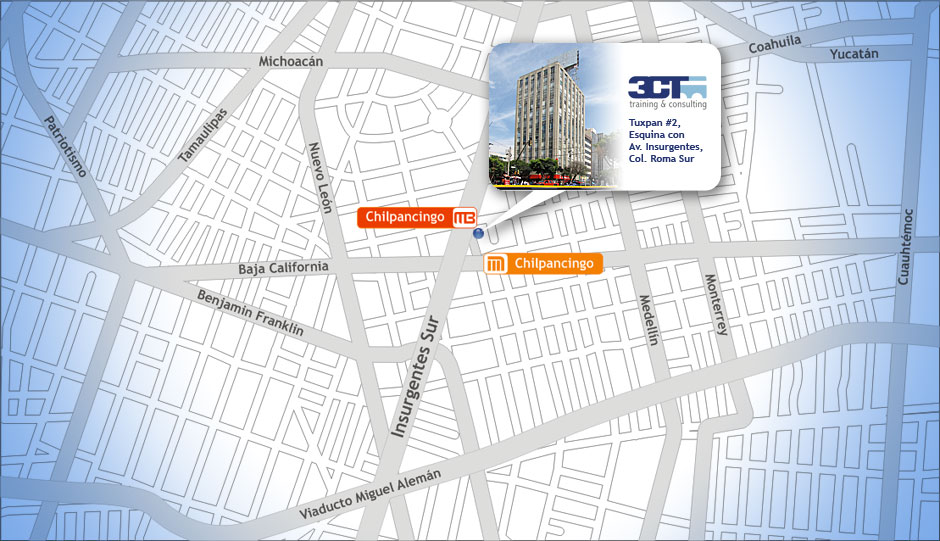

Teléfonos
Sucursal Roma:
5564 7993 y 5264 4719
Cursos de diseño web
Diplomados
Cursos de programación
Cursos de bases de datos
Diplomados:
-
Webmaster con Certificación de

- Diplomado de desarrollo de páginas web 2.0 con la paquetería Adobe CS5, XHTML, CSS, DHTML, Ajax, jQuery, XAMPP, PHP, MySQL y técnicas SEO.
 Conoce más
Conoce más
- Diplomado de desarrollo de páginas web 2.0 con la paquetería Adobe CS5, XHTML, CSS, DHTML, Ajax, jQuery, XAMPP, PHP, MySQL y técnicas SEO.
-
Informatica para la oficina
- Aprende el uso correcto de las aplicaciones más usadas en la oficina: Windows, Internet, Word y Excel Conoce más
- Aprende el uso correcto de las aplicaciones más usadas en la oficina: Windows, Internet, Word y Excel
-
Web 2.0 "Sólo código"
- El objetivo principal del diplomado es mostrar cada una de las tecnologías involucradas en el desarrollo de aplicaciones para la Internet sin el uso de herramientas de diseño, es decir, "sólo código": PHP, JavaScript, AJAX, Publicación Web Conoce más
- El objetivo principal del diplomado es mostrar cada una de las tecnologías involucradas en el desarrollo de aplicaciones para la Internet sin el uso de herramientas de diseño, es decir, "sólo código": PHP, JavaScript, AJAX, Publicación Web
Todos los cursos | Contacto | Inicio 5264 4719
Vías y medios de transporte para llegar a 3CT
Plantel Roma
Tuxpan #2
Col. Roma Sur
C.P. 06760
Esquina con Av. Insurgentes
Tels: 5564 7993 y 5264 4719
En metro
Estación Chilpancingo de la línea 9 que corre de Pantitlán a Tacubaya (Café) con conexiones de transbordo en Centro Médico, Chabacano y Tacubaya.
En MetroBus
Salida estación Chilpancingo del recorrido de la ruta A1 Y A2 de Indios verdes a Doctor Gálvez.
En automóvil
a) Eje 3 Sur Baja California o Insurgentes Sur justo donde se intersectan.
b) Eje 4 Sur Xola vuelta en Nuevo León a la izquierda
c) Circuito Interior poniente, vuelta a la izquierda por Eje 4 Sur Xola
d) Gabriel Mancera y su continuación Monterrey hasta Eje 3 Sur Baja California vuelta a la izquierda.
e) Viaducto rumbo al poniente hasta insurgentes vuelta a la derecha.
Plantel Polanco
Prolongación Moliere 515
Colonia Ampliación Granada.
Esquina con avenida Río San Joaquín
Tel: 5748 3148
En metro
Estación Rio San Joaquín de la línea 7 (El Rosario-Barranca del Muerto) que hace conexión con las siguientes líneas:
- Observatorio a Pantitlán (1)
- Cuatro Caminos a Taxqueña (2)
- El Rosario a Martín Carrera (6)
- Tacubaya a Pantitlán (9)
En Microbús
Tomar el Micro que dice Cuatro Caminos, que sale de la estación San Cosme de la línea 2 del Metro (Cuatro Caminos-Taxqueña) y bajarse en la esquina de Miguel de Cervantes Saavedra y Moliere. Caminar sobre Moliere dirección norte y a unos pasos antes de llegar a Río San Joaquín del lado derecho.
En la estación Rio San Joaquín de la línea 7 del Metro (El Rosario-Barranca del Muerto) Caminar hacia la gasolineria .
Tomar el Micro que dice Defensa o Soriana o Antara, la cual te deja en la esquina de Moliere y San Joaquín.
En automóvil
a) Rio San Joaquín dirección Cuatro Caminos, tomando la salida que dice Moliere y llegando a la esquina vuelta a la izquierda (Prolongación Moliere), pasando por debajo del puente de Río San Joaquín, enfrente a unos pasos.
b) Rio San Joaquín dirección Circuito Interior, tomando la salida que dice Moliere y llegando a la esquina vuelta a la derecha (Prolongación Moliere), enfrente a unos pasos.
c) Avenida Ejército Nacional dirección periférico, hasta llegar a la avenida Moliere, vuelta a la derecha sobre ésta, pasando Miguel de Cervantes Saavedra ((Prolongación Moliere) a unos pasos antes de llegar a Río San Joaquín del lado derecho.
d) Avenida Miguel de Cervantes Saavedra dirección periférico, hasta llegar a la avenida Moliere antes de la plaza Carso , vuelta a la derecha sobre ésta, (Prolongación Moliere) a unos pasos antes de llegar a Río San Joaquín del lado derecho.
d) Avenidas Horacio, Homero, Presidente Mazarik y Reforma dirección periférico, llegando a la calle de Moliere, vuelta a la derecha sobre ésta, (Prolongación Moliere) a unos pasos antes de llegar a Río San Joaquín del lado derecho. Sobre las mismas avenidas dirección Chapultepec, la vuelta es a la izquierda llegando a Moliere.
Ubicación de planteles
Ubicación del plantel Roma
